VII. QUAD-EXP-LOG-RECHNUNG
A. Potenz- und Poylnomfunktion
B. Quadratische Gleichungenen
C. Exponentialfunktion
D. Logarithmusfunktion/regeln
E. Exp- und Log-Gleichungen
F. Logarithmische Skalen
 Ergänzungen und Details
Ergänzungen und DetailsDie Potenzfunktion im engen Sinn schaut so aus:
y(x) = xb
Die Potenzfunktion im weiten Sinn erhalten wir durch Skalierung in y-Richtung, womit sich auch die Skalierungen in x-Richtung nachbilden lassen:
• y(x) = axb
Für natürliche Exponenten n schauen die Funktionskurven wie folgt aus, abwechselnd achsensymmetrisch zur y-Achse und punktsymmetrisch zum Ursprung. Ausgehend davon nennen wir eine Funktion f ganz allgemein
| 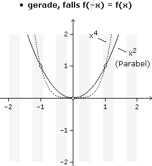 |  |
Auch x–n :=
1
xn
|  |  |
• x1n := n√x ist die Umkehrfunktion von xn, weil n√xn = jene Zahl, auf die man n setzen muss, um xn zu erhalten = x.
| 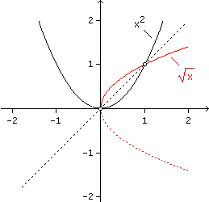 | 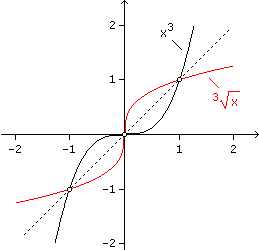 |
Achtung: Wurzelfunktionen mit geraden Exponenten sind auf der negativen x-Achse nicht definiert und versagen dort auch als nachgeschaltete Umkehrfunktion (bzw. müssen nachjustiert werden).
|
3√x3 = x ... für alle x |
Eine Polynomfunktion ist Summe von Potenzfunktionen mit natürlichen Exponenten, hat also ein Polynom als Funktionsterm:
• y(x) = anxn + an–1xn–1 + ... + a0
Die Polynomfunktion 1. Grades ist die lineare Funktion, die 2. Grades heißt quadratische Funktion usw. Erstere ist dadurch charakterisiert, dass bei gleich weit auseinanderliegenden Stellen die Differenzen aufeinanderfolgender Werte konstant sind, bei der quadratischen Funktion sind es die Differenzen der Differenzen usw.
Aufgabe 1: Bei der quadratischen Interpolation wird der Kurvenverlauf durch 3 benachbarte Punkte durch eine quadratische Funktion approximiert. Bestimme die Gleichung der quadratischen Funktion, deren Kurve durch die Punkte P1(–1|5), P2(1|3), P3(2|–4) geht.
y(x) = ax2 + bx + c
(1) a(–1)2 + b(–1) + c = 5
(2) a·12 + b·1 + c = 3
(3) a·22 + b·2 + c = –4
(1)–(2): –2b = 2  b = –1
b = –1
b = –1
(1)–(3): –3a – 3b = 9 –3a + 3 = 9 a = –2
–3a + 3 = 9 a = –2 (1): –2 + 1 + c = 5 c = 6
(1): –2 + 1 + c = 5 c = 6y = –2x2 – x + 6
Der Kurvenverlauf einer Polynomfunktion wird für x
±∞ durch die höchste Potenz bestimmt, dazwischen bewirken die anderen Potenzen Auf- und Abwärtsbewegungen, deren Anzahl durch den Grad des Polynoms beschränkt ist.Beispiel: y = x4 – 1,5x3 – 2x2 + 3x + 0,5
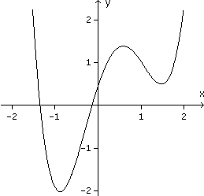
Durch Verschieben der Kurve in y-Richtung (= Änderung von a0) erkennen wir, dass eine Gleichung n-ten Grades, das ist die Frage nach den Nullstellen einer Polynomfunktion n-ten Grades, unterschiedlich viele, aber nicht mehr als n Lösungen haben kann.
ax2 + bx + c = 0 :a
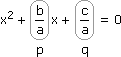
Wir addieren zu x eine feste, aber noch unbekannte Zahl d und nennen das Ergebnis x^, also x = x^–d:
(x^ – d)2 + p(x^ – d) + q = 0
x^2 – 2x^d + d2 + px^ – pd + q = 0
x^2 + (p – 2d)x^ + d(d – p) + q = 0
Jetzt wählen wir d =
p
2
x^2 – + q = 0
p2
4
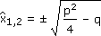
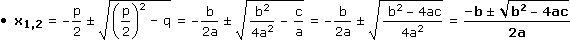
Der Ausdruck unter der Wurzel heißt Diskriminante und unterscheidet (lat. discriminare), wie viel Lösungen die quadratische Gleichung hat.
Aufgabe 2: Bestimme die Lösungsmenge in  :
:
a) x2 – 6x + 8 = 0 b) x2 – 6x + 9 = 0 c) x2 – 6x + 10 = 0
:
a) x2 – 6x + 8 = 0 b) x2 – 6x + 9 = 0 c) x2 – 6x + 10 = 0
|
a) x1,2 = 6 ± √(–6)2 – 4·8 2 6 ± 2 2  24 24Diskriminante > 0 zwei Lösungen:L = {2, 4} |
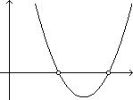 |
|
b) x1,2 = 6 ± √(–6)2 – 4·9 2 6 ± 0 2 33Diskriminante = 0 eine Doppellösung:L = {3} |
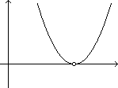 |
|
c) x1,2 = 6 ± √(–6)2 – 4·10 2 6 ± √–4 2  Diskriminante < 0 keine Lösung:L = |
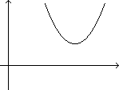 |
Aufgabe 3: Bestimme x für den folgenden Körper, sodass er eine Volumseinheit ergibt.
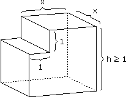
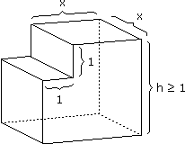
V = [h(x + 1) – 12]x = 1 –1
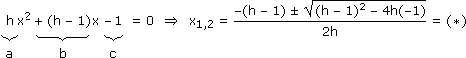
Diskriminante = h2 – 2h + 1 + 4h = h2 + 2h + 1 = (h + 1)2
(*) = 1h–1
– h + 1 ± (h + 1)
2h
1h–1
2 Satz von Vieta
Was passiert, wenn wir ein Polynom mit Nullstelle x1 durch (x–x1) dividieren?
(anxn + ... + a0):(x – x1) = anxn–1 + ... + Zahl
...
...
...
Rest
Also: 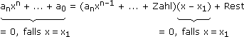
• Ein Polynom mit Nullstelle x1 ist durch (x–x1) ohne Rest dividierbar. Für ein quadratisches Polynom mit den Nullstellen x1,2 heißt das:
ax2 + bx + c = a(x2 + px + q) = a(x – x1)(x – x2) mit x1+x2 = –p und x1x2 = q
Aufgabe 4: Überprüfe die angegebene Lösung und bestimme damit die restlichen Lösungen:
a) x2 – 12x + 27 = 0, x1 = 3 b) x3 – 9x2 – 76x + 480 = 0, x1 = 5
a) x2 – 12x + 27 = 0, x1 = 3 b) x3 – 9x2 – 76x + 480 = 0, x1 = 5
a) 32 – 12·3 + 27 = 0

Lösungsvariante 1: x1+x2 = –(–12)
x2 = 12–x1 = 9Lösungsvariante 2: x1x2 = 27
x2 = 27
x1
b) 53 – 9·52 – 76·5 + 480 = 0
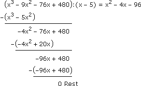
Damit können wir die linke Seite faktorisieren und argumentieren, dass ein Produkt genau dann 0 ist, wenn ein Faktor 0 ist:
(x2 – 4x – 96)(x – 5) = 0
x2,3 = 4 ± √(–4)2 – 4·(–96)
2
12–8Die Exponentialfunktion im engen Sinn schaut so aus:
y(x) = ex mit e := 2,71828... (Euler'sche Zahl)
Die Exponentialfunktion im weiten Sinn erhalten wir durch Skalierung in xy-Richtung:
• y(x) = ae±λx = abx mit λ > 0 und b = e±λ
Sie ist dadurch charakterisiert, dass bei gleich weit auseinanderliegenden Stellen die Verhältnisse aufeinanderfolgender Werte konstant sind oder anders ausgedrückt: Der nachfolgende Wert ist immer derselbe Prozentsatz vom vorhergehenden. Wir unterscheiden:
exponentielles Wachstum: exponentieller Zerfall:
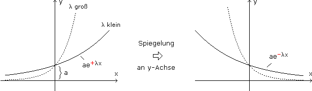
2 Exponentielle Annäherung
Von einer exponentiellen Annäherung mit fortschreitender Zeit t sprechen wir, wenn der Abstand von y(t) zum Endwert y∞ exponentiell zerfällt:
• |y(t) – y∞| = |y0 – y∞|e–λt
Statt der Abklingkonstanten λ, die das Verhalten von e–t über [0,1] auf [0,1/λ] skaliert, ist auch die Zeitkonstante τ := 1/λ gebräuchlich. Das ist die Zeit, in welcher der Abstand zum Endwert um 63% schrumpft (63% = e0–e–1).
Aufgabe 5: Lies die Funktionsgleichung für die exponentielle Annäherung aus folgendem Diagramm ab:
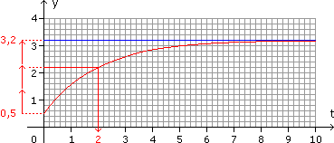
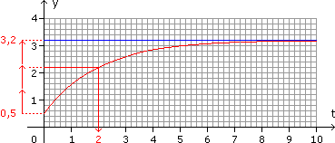
3,2 – y(t) = (3,2 – 0,5)e–t2
y(t) = 3,2 – 2,7e–t2
Bem: Der Kehrwert einer exponentiellen Annäherung an einen positiven, unteren Endwert ("Abkühlungskurve") heißt logistisches Wachstum.
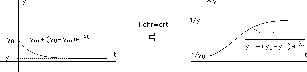
• y(x) = logbx ist die Umkehrfunktion von bx, weil logbbx = jene Zahl, die man auf b setzen muss, um bx zu erhalten = x.
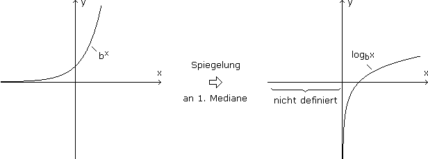
In der Mathematik sind Logarithmen zur Basis e (= Euler'sche Zahl) üblich, in der Technik zur Basis 10, abgekürzt:
• lnx := logex = Logarithmusfunktion im engen Sinn (logarithmus naturalis)
• lgx := log10x
Die Logarithmusfunktion im weiten Sinn ist die Umkehrung der entsprechenden Exponentialfunktion:
f: y = abx = a(elnb)x = aexlnb
f–1: x = aeylnb:a
x
a
ln = ylnb :lnb
x
a
y = ln (= in xy-Richtung skalierter lnx)
1
lnb
x
a
Für a = 1 folgt daraus:
• logbx =
lnx
lnb
2 Logarithmusrechenregeln
Die Logarithmusrechenregeln sind Gegenstücke der Potenzrechenregeln und senken die Rechenstufe wie folgt:
• logxy = logx + logy
• log
x
y
• logxr = rlogx
Beweis:
| xy |
|
blogbxy blogbxblogby = blogbx+logby |
Der Rest geht genauso bzw. können wir bei n

 * auch so argumentieren:
* auch so argumentieren:logxn = log(x·…·x) = logx + … + logx = nlogx
Aufgabe 6: Zerlege in mehrere Logarithmen bzw. fasse zu einem Logarithmus zusammen:
a) ln
b) 3lgx –
a) ln
x2y
x – 1
lg(x + y)
2
a) ln
x2y
x – 1
b) 3lgx –
1
2
x3
√x + y
Bei Exponentialgleichungen steht die Variable im Exponenten, bei Logarithmusgleichungen im Logarithmus. Zum Lösen, sofern das algebraisch überhaupt möglich ist, braucht es die jeweiligen Umkehrfunktionen und die zugehörigen Rechenregeln. Beim Logarithmus heißt es aufpassen, da er nur für positive Argumente definiert ist und in diesem Zusammenhang Scheinlösungen auftreten können:
2lnx = 0 … L = {1}
 ?
?
lnx2 = 0 … L = {–1, 1}
Aufgabe 7: Löse nach t auf: 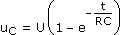
Die gesuchte Variable kommt nur einmal vor, also bauen wir den sie einhüllenden Term in umgekehrter Reihenfolge ab:
:U
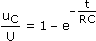–1 ·(–1)
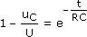ln(.) ·(–RC)
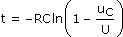
Aufgabe 8: Bestimme die Lösungsmenge in : 4·32x–1 = 5·2x + 32x
: 4·32x–1 = 5·2x + 32xDas Problem, dass der Logarithmus einer Summe nicht zerlegbar ist, umgehen wir durch Faktorisieren:
4·32x–1 = 5·2x + 32x –32x
32x(4·3–1 – 1) = 5·2x
32x = 5·2x·3
1
3
32x = 15·2x ln(.)
2xln3 = ln15 + xln2
x(2ln3 – ln2) = ln15
x = = 1,80
ln15
2ln3 – ln2
Aufgabe 9: Bestimme die Lösungsmenge in : 22x+2 – 129·2x–1 + 8 = 0
: 22x+2 – 129·2x–1 + 8 = 0Die Variable kommt immer im gleichen Kontext vor, also substituieren wir diesen durch eine neue Variable:
22x+2 – 129·2x–1 + 8 = 0
(2x)222 – 129·2x2–1 + 8 = 0| u = 2x
4u2 – 64,5u + 8 = 0
(2x)222 – 129·2x2–1 + 8 = 0| u = 2x
4u2 – 64,5u + 8 = 0
a) u1,2 =
64,5 ± √(–64,5)2 – 4·4·8
2·4
0,12516|
Fall u1: 2x = 0,125 | ln(.)
x·ln2 = ln0,125
x1 =
ln0,125 ln2 |
Fall u2: 2x = 16 | ln(.)
x·ln2 = ln16
x2 =
ln16 ln2 |
Aufgabe 10: Bestimme die Lösungsmenge in : 2ln(x – 4) – ln(x + 2) = 0,47
: 2ln(x – 4) – ln(x + 2) = 0,47Wir fassen die Logarithmen zu einem einzigen Logarithmus zusammen und beseitigen ihn mit der Umkehrfunktion:
2ln(x – 4) – ln(x + 2) = 0,47
ln = 0,47e(.)
(x – 4)2
x + 2
x2 – 8x + 16
x + 2
x2 – 8x + 16 = 1,6x + 3,2
x2 – 9,6x + 12,8 = 0
x1,2 = 1,68
9,6 ± √(–9,6)2 – 4·12,8
2
1,68
Einsetzprobe L = { 8 }
L = { 8 }2 Textaufgaben
Aufgabe 11: Jemand trinkt um 7:00 Uhr zwei Tassen Kaffee und um 13:00 Uhr eine weitere. Wie viel Tassen Kaffee entspricht das um 21:00 Uhr noch übrige Koffein, wenn seine Halbwertszeit bei 3,5 Stunden liegt?
y1(t1) = Koffein in Form von Tassen Kaffee nach t1 Stunden seit 7:00 Uhr
y1(t1) = 2·0,5t13,5
7:00 bis 13:00 = 6 Std
y1(6) = 0,61 Tasseny2(t2) = Koffein in Form von Tassen Kaffee nach t2 Stunden seit 13:00 Uhr
y2(t2) = 1,61·0,5t23,5
13:00 bis 21:00 = 8 Std
y2(8) = 0,33 Tassen
Aufgabe 12: Frisch aus dem Kühlschrank liegt die Temperatur der Milch bei 8 °C, nach 20 Minuten bei 22,7 °C. Bestimme y(t), die Milchtemperatur in °C nach t Minuten, wenn sie sich exponentiell der Zimmertemperatur von 25 °C annähert.
Abstand zum Endwert zerfällt exponentiell: y∞ – y(t) = (y∞ – y0)e–λt
25 – y(t) = (25 – 8)e–λt –17e–λt +y(t)
25 – 17e–λt = y(t)
Und λ bestimmen wir so, dass y(20) = 22,7
25 – 17e–20λ = 22,7 –25 :(–17)
e–20λ = 0,135 ln(.) :(–20)
λ = 0,1
y(t) = 25 – 17e–0,1t
Aufgabe 13: Der Schallintensitätspegel in dB wird aus der Schallintensität wie unten angegeben errechnet. Welchen Pegel ergeben zwei Maschinen mit 86 dB und 91 dB, wenn sie gleichzeitig laufen und sich dadurch die Schallintensitäten addieren?
L = 10lg (I0 = gerade noch hörbare Schallintensität)
I
I0
Wir stellen I frei, berechnen damit I1 + I2 und setzen das Ergebnis wieder in die ursprüngliche Formel ein:
L = 10lg
I
I0
I = I010L10
I1 + I2 = I0108610 + I0109110 = I01,657·109
L = 10lg1,657·109 = 92,2 dBEine logarithmische Skala erhalten wir, indem wir die Position x auf der Zahlengeraden mit 10x beschriften. Auf einer solchen Skala können wir positive Zahlen verschiedener Größenordnung darstellen, ohne dass kleine Zahlen verschmelzen bzw. große außerhalb der Skala liegen.
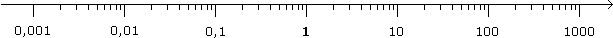
Ein xy-Koordinatensystem mit ein/zwei logarithmisch skalierten Achsen heißt logarithmisches Papier. Die Kurve einer Funkion darauf können wir auch auf "normalem" Papier simulieren, indem wir den Funktionsterm ausgangsseitig logarithmieren bzw. eingangsseitig das Gegenteil machen:
Aufgabe 14: Zeichne die angegbene Funktion mit x^:=lgx und/oder y^:=lgy auf normales Papier und ändere dann die Achsenbeschriftung auf
a) y-logarithmisches Papier: y = 0,5e3x = Exponentialfunktion
a) y-logarithmisches Papier: y = 0,5e3x = Exponentialfunktion
b) x-logarithmisches Papier: y = –ln(0,2x) = Logarithmusfunktion
c) xy-logarithmisches Papier: y = 2√x = Potenzfunktion
a) y^ = lg(0,5e3x) = lg0,5 + 3xlge = –0,3 + 1,3x
b) y = –ln(0,2·10x^) = –ln0,2 – x^ln10 = 1,6 – 2,3x^
c) y^ = lg[2(10x^)0,5] = lg(2·100,5x^) = lg2 + lg100,5x^ = 0,3 + 0,5x^
a) 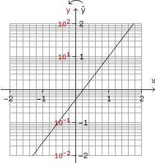
b) 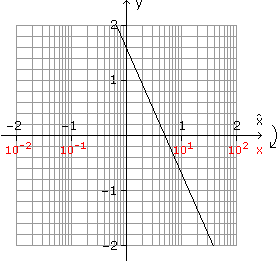
c) 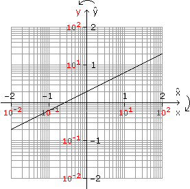